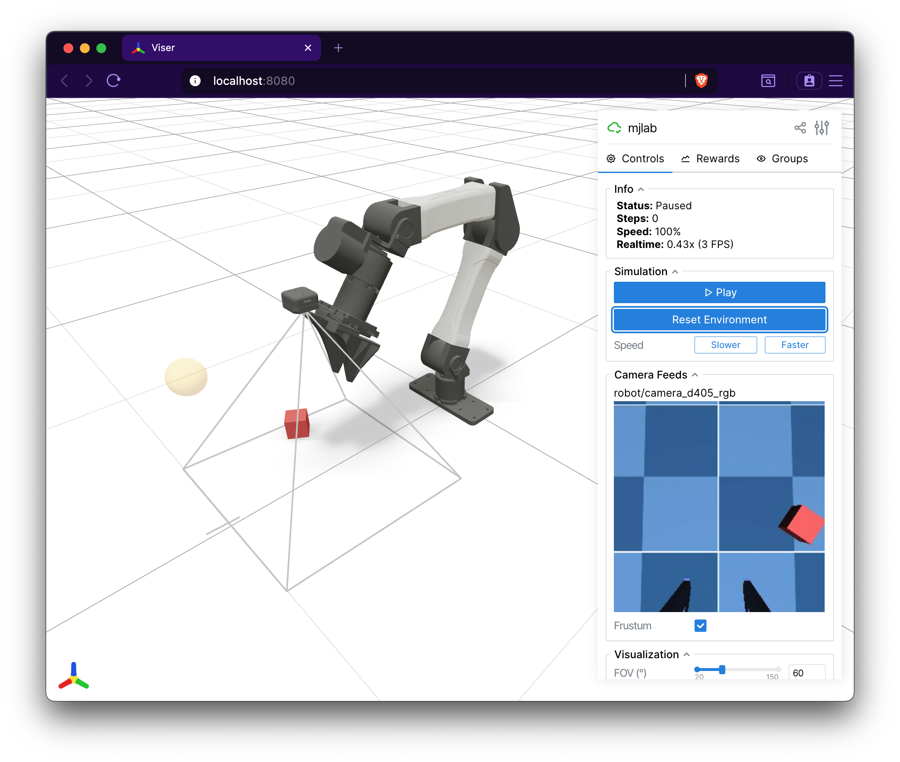

RGB-D Camera#
CameraSensor renders RGB and depth images on the GPU using MuJoCo
Warp’s ray-traced rendering pipeline. It can either wrap an existing
MuJoCo camera defined in your XML or create a new one programmatically.
Quick start#
from mjlab.sensor import CameraSensorCfg
# Wrap an existing MuJoCo camera from the robot's XML.
cam = CameraSensorCfg(
name="wrist_cam",
camera_name="robot/wrist_camera",
data_types=("rgb", "depth"),
width=160,
height=120,
)
scene_cfg = SceneCfg(
entities={"robot": robot_cfg},
sensors=(cam,),
)
# Access at runtime.
data = env.scene["wrist_cam"].data
data.rgb # [B, 120, 160, 3] uint8
data.depth # [B, 120, 160, 1] float32
Creating vs wrapping cameras#
There are two ways to set up a camera sensor.
Wrap an existing camera. If your MJCF model already defines a
camera, pass its name via camera_name. The sensor uses the
camera’s position, orientation, and field of view from the model.
You can optionally override fovy or switch to orthographic
projection.
# Wrap the camera named "front_cam" in the robot's XML.
CameraSensorCfg(
name="front",
camera_name="robot/front_cam",
data_types=("rgb",),
)
Create a new camera. When camera_name is None (the
default), the sensor adds a new camera to the MjSpec during scene
construction. Specify pos, quat, and optionally fovy to
place it.
# Fixed overhead camera on the worldbody.
CameraSensorCfg(
name="overhead",
pos=(0.0, 0.0, 2.0),
quat=(0.0, 0.707, 0.707, 0.0),
fovy=60.0,
width=320,
height=240,
data_types=("rgb", "depth"),
)
Camera parameterization#
MuJoCo supports two ways to define a camera’s projection, and both
work with CameraSensor. See the MuJoCo camera documentation
for full details.
FOV-based. The simpler approach. A single fovy (vertical field
of view in degrees) combined with the image resolution defines the
projection. This is the default when creating cameras
programmatically via CameraSensorCfg.
Intrinsic-based. For matching real camera hardware, MuJoCo cameras
can be parameterized with sensorsize, focal (or
focalpixel), and principal (or principalpixel). These
fields are set in the MJCF XML and provide direct control over the
intrinsic matrix. When intrinsic parameters are present, fovy is
ignored by MuJoCo.
When wrapping an existing camera, the sensor inherits whichever
parameterization the XML defines. When creating a new camera, the
sensor uses fovy. To use intrinsic parameters for a new camera,
define it in your XML and wrap it with camera_name.
Note
If you plan to randomize the field of view with domain
randomization, use dr.cam_fovy for FOV-based cameras or
dr.cam_intrinsic for intrinsic-based cameras. Randomizing
cam_fovy has no effect on cameras that use intrinsic parameters.
Body-mounted cameras#
Set parent_body to attach a new camera to a specific body rather
than the worldbody. The pos and quat are then relative to the
parent body frame, so the camera moves with the body.
# Camera mounted on the robot's end-effector.
CameraSensorCfg(
name="ee_cam",
parent_body="robot/link_6",
pos=(0.0, 0.0, 0.05),
quat=(1.0, 0.0, 0.0, 0.0),
fovy=45.0,
width=160,
height=120,
data_types=("rgb", "depth"),
)
Data types#
The data_types tuple selects which image modalities to render.
Only requested types are allocated; the other field on
CameraSensorData is None.
Type |
Shape |
Description |
|---|---|---|
|
|
Color image. Rendered as packed ABGR uint32 by MuJoCo Warp, then unpacked to RGB channels on the GPU. |
|
|
Depth image. Values are distances from the camera plane. |
|
|
Typed segmentation. Channel 0 stores object IDs and channel 1 stores
MuJoCo object types. Background pixels are |
Render settings#
All camera sensors in a scene must share identical values for
use_textures, use_shadows, and enabled_geom_groups. This
is a constraint of the underlying MuJoCo Warp rendering system, which
uses a single RenderContext for all cameras. Mismatched settings
raise a ValueError at scene construction.
# These two cameras must agree on render settings.
cam_a = CameraSensorCfg(
name="cam_a",
camera_name="robot/front_cam",
use_textures=True,
use_shadows=False,
enabled_geom_groups=(0, 1, 2),
data_types=("rgb",),
)
cam_b = CameraSensorCfg(
name="cam_b",
camera_name="robot/wrist_cam",
use_textures=True, # Must match cam_a
use_shadows=False, # Must match cam_a
enabled_geom_groups=(0, 1, 2), # Must match cam_a
data_types=("depth",),
)
Output#
CameraSensorData is a dataclass with one field per data type.
@dataclass
class CameraSensorData:
rgb: Tensor | None # [B, H, W, 3] uint8
depth: Tensor | None # [B, H, W, 1] float32
segmentation: Tensor | None # [B, H, W, 2] int32
By default, the returned tensors are zero-copy views into the render
buffer. Set clone_data=True on the config if you modify them in
place, to avoid corrupting the shared buffer.
Visualization in Viser#
The Viser viewer automatically discovers all CameraSensor instances
in the scene and displays their RGB and depth outputs as live image
panels in the GUI sidebar. A camera frustum is rendered in the 3D
viewport showing the camera’s position, orientation, and field of view.
Depth images include an interactive scale slider for adjusting the
visualization range.
